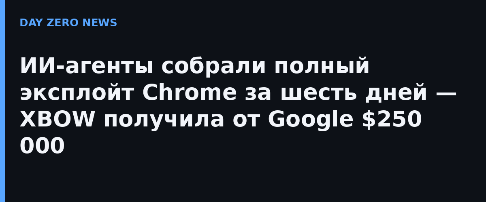

Компания XBOW опубликовала подробный разбор эксплойта, за который Google выплатил ей $250 000 — это первая премия за полный эксплойт Chrome (full chain) по обновлённым правилам программы VRP, действующим с апреля 2026 года. Цепочка состоит из трёх уязвимостей: ошибка в оптимизирующем компиляторе Maglev движка V8 (при «расоптимизации» кода повторно использовался изменяемый числовой объект), сбой в декодере анимированных изображений WebP (он дал одну запись в память за пределами песочницы V8) и ошибка работы с памятью в обработчике сбоев Crashpad (он позволил выполнить код вне песочницы процесса, уже без ограничений). Сложенные вместе, эти три бага превращают обычный JavaScript на открытой веб-странице в произвольный код на компьютере пользователя.
Работу вели не люди, а ИИ-агенты на модели OpenAI gpt-5.6-sol: они искали уязвимости в исходном коде, проверяли гипотезы и собирали подтверждающие работоспособность прототипы, тогда как исследователи XBOW выбирали цели, задавали контекст и решали, какие части соединять. Кампания шла шесть дней — со 2 по 7 августа, — а по архиву журналов её стоимость оценена примерно в $40 000 расходов на API.
До появления LLM полную цепочку для Chrome собирала бы команда из четырёх человек, и заняло бы это от полугода до девяти месяцев. Первый «агентный» результат XBOW занял два месяца, а отмеченный премией — шесть дней. При этом, как отмечает сама компания, одна из более ранних цепочек обанкротилась на финальном этапе: последняя уязвимость оказалась уже найдена инженерами Google сама — конкуренция за баг-баунти в эпоху ИИ резко выросла.
XBOW подчёркивает: все три бага оказались вариантами одной темы «измени то, что считалось неизменяемым», — именно такие нарушения внутренних инвариантов модели ищут особенно успешно. Вывод, который компания выносит для защищающихся, короткий: порог входа в создание цепочек уровня Chrome стал заметно ниже, и обороняться надо исходя из этого. Forbes в пересказе истории называет это работой «обычной доступной модели» — без кастомного дообучения.
Речь не об инструкции: деталей, позволяющих воспроизвести атаку, XBOW не раскрывает, и мы тоже. Существенно другое — экономика. $40 000 и шесть дней против команды профессионалов на квартал: для разработчиков браузеров и владельцев браузерной инфраструктуры — сигнал пересмотреть сроки выпуска исправлений и аудит «редких» компонентов — декодеров изображений, обработчиков сбоев, компиляторов.